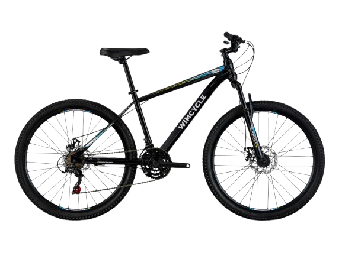

|

|
Wimcycle MTB XT
Rp 3.900.000
Deskripsi Produk
Wimcycle MTB XT merupakan sepeda gunung (MTB) yang dirancang untuk memberikan
kenyamanan dan ketangguhan saat berkendara di berbagai jenis medan. Sepeda ini
cocok digunakan untuk aktivitas sehari-hari, olahraga, maupun petualangan di
jalur perbukitan dan jalan berbatu ringan.
Dilengkapi rangka yang kuat dan ringan, Wimcycle MTB XT menawarkan stabilitas
yang baik saat digunakan. Sistem transmisi yang responsif memudahkan pengendara
menyesuaikan kecepatan dengan kondisi jalan, sementara suspensi depan membantu
meredam guncangan untuk meningkatkan kenyamanan selama perjalanan.
Spesifikasi
| Merek |
: |
Wimcycle |
| Tipe |
: |
MTB XT |
| Jenis |
: |
Sepeda Gunung (MTB) |
| Frame |
: |
Aluminium Alloy |
| Fork |
: |
Suspension Fork |
| Jumlah Gear |
: |
21 Speed |
| Ukuran Roda |
: |
27.5 Inch |
| Sistem Rem |
: |
Disc Brake |
| Warna |
: |
Hitam - Oranye |
| Berat |
: |
±14,2 Kg |
|